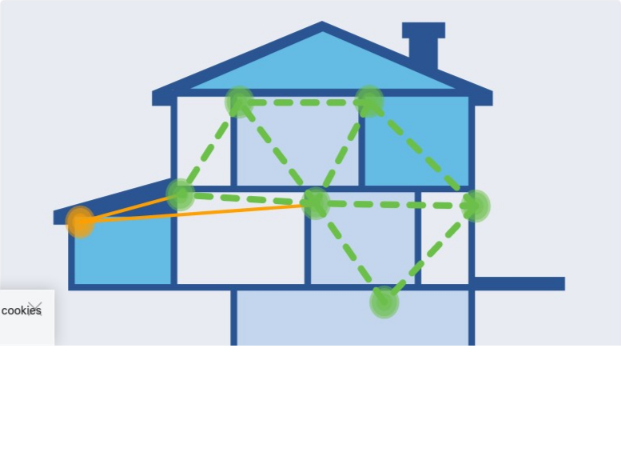

الشبكات اللاسلكية
مقدمة في الشبكات اللاسلكية
الشبكات اللاسلكية (Wireless Networks) هي شبكات تسمح للأجهزة بالاتصال والتواصل دون الحاجة إلى كابلات فيزيائية. تستخدم هذه الشبكات موجات الراديو لنقل البيانات بين الأجهزة، مما يوفر مرونة وحرية في الحركة لا توفرها الشبكات السلكية التقليدية.
أصبحت الشبكات اللاسلكية جزءًا أساسيًا من حياتنا اليومية، سواء في المنازل أو المكاتب أو المؤسسات التعليمية أو الأماكن العامة. توفر هذه الشبكات اتصالًا بالإنترنت وبالموارد المحلية بطريقة سهلة ومريحة.
أنواع الشبكات اللاسلكية
هناك عدة أنواع من الشبكات اللاسلكية، تختلف في نطاقها وتطبيقاتها وتقنياتها:
1. الشبكة المحلية اللاسلكية (WLAN - Wireless Local Area Network)
الشبكة المحلية اللاسلكية هي شبكة لاسلكية تغطي منطقة محدودة مثل منزل أو مكتب أو مبنى. تستخدم هذه الشبكات معايير IEEE 802.11 (Wi-Fi) وتوفر اتصالًا لاسلكيًا للأجهزة ضمن نطاق محدود.
خصائص الشبكة المحلية اللاسلكية:
- نطاق التغطية: عادة من 30 إلى 100 متر.
- معدل نقل البيانات: من 11 ميجابت/ثانية إلى عدة جيجابت/ثانية، اعتمادًا على المعيار المستخدم.
- التردد: 2.4 جيجاهرتز أو 5 جيجاهرتز أو 6 جيجاهرتز.
- الأجهزة الرئيسية: نقاط الوصول (Access Points) وموجهات Wi-Fi.
2. الشبكة الشخصية اللاسلكية (WPAN - Wireless Personal Area Network)
الشبكة الشخصية اللاسلكية هي شبكة لاسلكية تغطي منطقة صغيرة جدًا، عادة في نطاق الشخص. تستخدم هذه الشبكات تقنيات مثل Bluetooth و ZigBee و NFC.
خصائص الشبكة الشخصية اللاسلكية:
- نطاق التغطية: عادة من 1 إلى 10 أمتار.
- معدل نقل البيانات: من بضع كيلوبت/ثانية إلى بضع ميجابت/ثانية.
- التردد: 2.4 جيجاهرتز (Bluetooth و ZigBee) أو 13.56 ميجاهرتز (NFC).
- الأجهزة الرئيسية: الهواتف الذكية، سماعات الرأس اللاسلكية، أجهزة المنزل الذكي.
3. الشبكة المتروبولية اللاسلكية (WMAN - Wireless Metropolitan Area Network)
الشبكة المتروبولية اللاسلكية هي شبكة لاسلكية تغطي منطقة حضرية كاملة. تستخدم هذه الشبكات تقنيات مثل WiMAX (IEEE 802.16).
خصائص الشبكة المتروبولية اللاسلكية:
- نطاق التغطية: عدة كيلومترات.
- معدل نقل البيانات: من 1 إلى 1000 ميجابت/ثانية.
- التردد: من 2 إلى 66 جيجاهرتز.
- الأجهزة الرئيسية: محطات قاعدة WiMAX، أجهزة العملاء.
4. الشبكة الواسعة اللاسلكية (WWAN - Wireless Wide Area Network)
الشبكة الواسعة اللاسلكية هي شبكة لاسلكية تغطي منطقة جغرافية واسعة، مثل مدينة أو دولة. تستخدم هذه الشبكات تقنيات الاتصالات الخلوية مثل 3G و 4G و 5G.
خصائص الشبكة الواسعة اللاسلكية:
- نطاق التغطية: عشرات الكيلومترات.
- معدل نقل البيانات: من بضع كيلوبت/ثانية إلى عدة جيجابت/ثانية، اعتمادًا على التقنية.
- التردد: من 700 ميجاهرتز إلى 39 جيجاهرتز، اعتمادًا على التقنية والنطاق.
- الأجهزة الرئيسية: أبراج الاتصالات الخلوية، الهواتف المحمولة، أجهزة المودم الخلوية.
معايير Wi-Fi (IEEE 802.11)
معايير IEEE 802.11، المعروفة باسم Wi-Fi، هي مجموعة من المعايير التي تحدد كيفية عمل الشبكات المحلية اللاسلكية. تم تطوير هذه المعايير من قبل معهد مهندسي الكهرباء والإلكترونيات (IEEE).
المعايير الرئيسية:
| المعيار | تاريخ الإصدار | التردد | الحد الأقصى لمعدل نقل البيانات | نطاق التغطية الداخلي |
|---|---|---|---|---|
| 802.11b | 1999 | 2.4 جيجاهرتز | 11 ميجابت/ثانية | 35 متر |
| 802.11a | 1999 | 5 جيجاهرتز | 54 ميجابت/ثانية | 35 متر |
| 802.11g | 2003 | 2.4 جيجاهرتز | 54 ميجابت/ثانية | 38 متر |
| 802.11n | 2009 | 2.4/5 جيجاهرتز | 600 ميجابت/ثانية | 70 متر |
| 802.11ac | 2013 | 5 جيجاهرتز | 6.9 جيجابت/ثانية | 35 متر |
| 802.11ax (Wi-Fi 6) | 2019 | 2.4/5/6 جيجاهرتز | 9.6 جيجابت/ثانية | 30 متر |
التقنيات المستخدمة في معايير Wi-Fi:
- MIMO (Multiple Input Multiple Output): استخدام عدة هوائيات للإرسال والاستقبال، مما يزيد من معدل نقل البيانات والموثوقية.
- MU-MIMO (Multi-User MIMO): السماح لنقطة الوصول بالتواصل مع عدة أجهزة في نفس الوقت.
- OFDM (Orthogonal Frequency Division Multiplexing): تقسيم الإشارة إلى عدة إشارات فرعية وإرسالها على ترددات مختلفة.
- Beamforming: توجيه الإشارة اللاسلكية نحو الجهاز المستهدف بدلاً من بثها في جميع الاتجاهات.
- Channel Bonding: دمج قنوات متعددة لزيادة عرض النطاق الترددي.
مكونات الشبكة اللاسلكية
تتكون الشبكة المحلية اللاسلكية من عدة مكونات رئيسية:
1. نقطة الوصول (Access Point - AP)
نقطة الوصول هي جهاز يربط الأجهزة اللاسلكية بالشبكة السلكية. تقوم نقطة الوصول بتحويل البيانات بين الشبكة السلكية والشبكة اللاسلكية، وتوفر نقطة اتصال للأجهزة اللاسلكية.
وظائف نقطة الوصول:
- بث إشارة لاسلكية (SSID) للأجهزة للاتصال بها.
- مصادقة الأجهزة التي تحاول الاتصال بالشبكة.
- تشفير البيانات المرسلة عبر الشبكة اللاسلكية.
- توجيه حركة البيانات بين الأجهزة اللاسلكية والشبكة السلكية.
2. موجه لاسلكي (Wireless Router)
الموجه اللاسلكي هو جهاز يجمع بين وظائف نقطة الوصول والموجه. يقوم بتوجيه حركة البيانات بين الشبكة المحلية والإنترنت، بالإضافة إلى توفير اتصال لاسلكي للأجهزة.
وظائف الموجه اللاسلكي:
- توفير اتصال لاسلكي للأجهزة (وظيفة نقطة الوصول).
- توجيه حركة البيانات بين الشبكة المحلية والإنترنت.
- توفير خدمات مثل DHCP و NAT و Firewall.
- إدارة الشبكة المحلية.
3. محول الشبكة اللاسلكي (Wireless Network Adapter)
محول الشبكة اللاسلكي هو جهاز يسمح للأجهزة بالاتصال بالشبكة اللاسلكية. يمكن أن يكون محول الشبكة اللاسلكي مدمجًا في الجهاز (كما في معظم الأجهزة الحديثة) أو خارجيًا (مثل محولات USB اللاسلكية).
وظائف محول الشبكة اللاسلكي:
- البحث عن الشبكات اللاسلكية المتاحة.
- الاتصال بالشبكة اللاسلكية المختارة.
- إرسال واستقبال البيانات عبر الشبكة اللاسلكية.
4. الهوائي (Antenna)
الهوائي هو جهاز يستخدم لإرسال واستقبال الإشارات اللاسلكية. يمكن أن تكون الهوائيات داخلية (مدمجة في الجهاز) أو خارجية.
أنواع الهوائيات:
- الهوائي متعدد الاتجاهات (Omnidirectional Antenna): يرسل ويستقبل الإشارات في جميع الاتجاهات.
- الهوائي أحادي الاتجاه (Directional Antenna): يركز الإشارة في اتجاه معين، مما يزيد من المدى في ذلك الاتجاه.
تصميم وتخطيط الشبكة اللاسلكية
تصميم وتخطيط الشبكة اللاسلكية هو عملية تحديد موقع وعدد نقاط الوصول اللازمة لتوفير تغطية لاسلكية مناسبة في منطقة معينة. يتضمن ذلك عدة خطوات:
1. تحديد متطلبات الشبكة
- عدد المستخدمين: كم عدد الأشخاص الذين سيستخدمون الشبكة في نفس الوقت؟
- نوع التطبيقات: ما هي التطبيقات التي سيتم استخدامها على الشبكة (تصفح الويب، البريد الإلكتروني، الفيديو، الصوت، إلخ)؟
- متطلبات عرض النطاق الترددي: ما هو عرض النطاق الترددي المطلوب لكل مستخدم وللشبكة ككل؟
- متطلبات التغطية: ما هي المناطق التي تحتاج إلى تغطية لاسلكية؟
2. مسح الموقع (Site Survey)
مسح الموقع هو عملية تقييم البيئة الفيزيائية لتحديد أفضل مواقع لنقاط الوصول. يتضمن ذلك:
- تحديد العوائق: الجدران، الأسقف، الأرضيات، الأثاث، إلخ.
- تحديد مصادر التداخل: أفران الميكروويف، الهواتف اللاسلكية، شبكات Wi-Fi الأخرى، إلخ.
- قياس قوة الإشارة: استخدام أدوات لقياس قوة الإشارة في مواقع مختلفة.
3. اختيار المعدات المناسبة
- نقاط الوصول: اختيار نقاط وصول تدعم المعايير المطلوبة وتوفر التغطية والأداء المطلوبين.
- الهوائيات: اختيار الهوائيات المناسبة بناءً على متطلبات التغطية.
- الموجهات والمبدلات: اختيار الموجهات والمبدلات التي تدعم حركة البيانات المتوقعة.
4. تحديد مواقع نقاط الوصول
بناءً على نتائج مسح الموقع، يتم تحديد أفضل مواقع لنقاط الوصول لتوفير تغطية مثالية. يجب مراعاة:
- التغطية: تأكد من تغطية جميع المناطق المطلوبة.
- التداخل: تجنب التداخل بين نقاط الوصول.
- الكثافة: توفير عدد كافٍ من نقاط الوصول لدعم عدد المستخدمين المتوقع.
5. تكوين الشبكة
- اختيار القنوات: تعيين قنوات مختلفة لنقاط الوصول المتجاورة لتجنب التداخل.
- تكوين الأمان: تمكين التشفير وتكوين إعدادات المصادقة.
- تكوين SSID: اختيار اسم للشبكة وتكوين إعدادات البث.
- تكوين QoS: تكوين جودة الخدمة لإعطاء الأولوية لأنواع معينة من حركة البيانات.
6. اختبار وتحسين الشبكة
- اختبار التغطية: التأكد من تغطية جميع المناطق المطلوبة.
- اختبار الأداء: قياس معدل نقل البيانات والتأخير في مواقع مختلفة.
- تحسين التكوين: ضبط إعدادات نقاط الوصول بناءً على نتائج الاختبار.
أمان الشبكات اللاسلكية
أمان الشبكات اللاسلكية هو مجموعة من الإجراءات والتقنيات المستخدمة لحماية الشبكة اللاسلكية من الوصول غير المصرح به وحماية البيانات المرسلة عبر الشبكة.
التهديدات الشائعة للشبكات اللاسلكية:
- الوصول غير المصرح به: محاولة الاتصال بالشبكة دون إذن.
- التنصت: اعتراض البيانات المرسلة عبر الشبكة اللاسلكية.
- هجمات الوسيط (Man-in-the-Middle): اعتراض الاتصال بين الجهاز ونقطة الوصول.
- هجمات رفض الخدمة (DoS): إغراق الشبكة بحركة بيانات غير ضرورية لتعطيلها.
- نقاط الوصول المزيفة (Rogue Access Points): نقاط وصول غير مصرح بها متصلة بالشبكة.
تقنيات أمان الشبكات اللاسلكية:
1. بروتوكولات التشفير
- WEP (Wired Equivalent Privacy): بروتوكول تشفير قديم وغير آمن، لا ينصح باستخدامه.
- WPA (Wi-Fi Protected Access): بروتوكول تشفير أكثر أمانًا من WEP، ولكنه أصبح ضعيفًا الآن.
- WPA2 (Wi-Fi Protected Access 2): بروتوكول تشفير قوي يستخدم خوارزمية AES، وهو المعيار الحالي.
- WPA3 (Wi-Fi Protected Access 3): أحدث بروتوكول تشفير، يوفر أمانًا محسنًا مقارنة بـ WPA2.
2. طرق المصادقة
- المصادقة المفتوحة (Open Authentication): لا توجد مصادقة، أي جهاز يمكنه الاتصال بالشبكة.
- المصادقة المشتركة (Shared Authentication): استخدام مفتاح مشترك للمصادقة.
- المصادقة القائمة على المستخدم (User-Based Authentication): استخدام اسم مستخدم وكلمة مرور للمصادقة.
- 802.1X/EAP: إطار عمل للمصادقة يدعم عدة طرق مصادقة، مثل EAP-TLS و PEAP و EAP-TTLS.
3. تقنيات أمان إضافية
- إخفاء SSID: عدم بث اسم الشبكة، مما يجعلها غير مرئية للأجهزة التي تبحث عن الشبكات.
- تصفية عناوين MAC: السماح فقط لأجهزة محددة بالاتصال بالشبكة بناءً على عناوين MAC الخاصة بها.
- الشبكات الافتراضية الخاصة (VPN): تشفير جميع البيانات المرسلة عبر الشبكة اللاسلكية.
- جدران الحماية اللاسلكية (Wireless Firewalls): مراقبة وتصفية حركة البيانات اللاسلكية.
- أنظمة كشف/منع التسلل اللاسلكية (WIDS/WIPS): مراقبة الشبكة اللاسلكية للكشف عن النشاط المشبوه ومنعه.
أفضل ممارسات أمان الشبكات اللاسلكية:
- استخدام تشفير قوي: استخدام WPA2 أو WPA3 بدلاً من WEP أو WPA.
- استخدام كلمات مرور قوية: استخدام كلمات مرور طويلة ومعقدة للشبكة اللاسلكية.
- تغيير كلمات المرور الافتراضية: تغيير كلمات المرور الافتراضية لنقاط الوصول والموجهات.
- تحديث البرامج الثابتة: تحديث البرامج الثابتة لنقاط الوصول والموجهات بانتظام.
- استخدام شبكات VLAN: فصل حركة البيانات اللاسلكية عن حركة البيانات السلكية.
- تعطيل WPS: تعطيل ميزة Wi-Fi Protected Setup (WPS) التي يمكن استغلالها في الهجمات.
- مراقبة الشبكة: مراقبة الشبكة اللاسلكية بانتظام للكشف عن النشاط المشبوه.
تكوين وإدارة الشبكات اللاسلكية
تكوين وإدارة الشبكات اللاسلكية هي عملية إعداد وصيانة الشبكة اللاسلكية لضمان أدائها الأمثل وأمانها.
1. تكوين نقطة الوصول/الموجه اللاسلكي
تتضمن عملية تكوين نقطة الوصول أو الموجه اللاسلكي عدة خطوات:
الإعدادات الأساسية:
- اسم الشبكة (SSID): اختيار اسم للشبكة اللاسلكية.
- القناة: اختيار قناة لاسلكية لتجنب التداخل مع الشبكات الأخرى.
- وضع اللاسلكي: اختيار المعيار اللاسلكي (802.11a/b/g/n/ac/ax).
- النطاق الترددي: اختيار النطاق الترددي (2.4 جيجاهرتز أو 5 جيجاهرتز).
- قوة الإرسال: ضبط قوة إرسال الإشارة اللاسلكية.
إعدادات الأمان:
- بروتوكول التشفير: اختيار بروتوكول التشفير (WPA2/WPA3).
- كلمة المرور: تعيين كلمة مرور قوية للشبكة.
- طريقة المصادقة: اختيار طريقة المصادقة (PSK، 802.1X، إلخ).
- تصفية عناوين MAC: تكوين قائمة بعناوين MAC المسموح لها بالاتصال بالشبكة.
إعدادات الشبكة:
- عنوان IP: تكوين عنوان IP لنقطة الوصول/الموجه.
- DHCP: تكوين خادم DHCP لتخصيص عناوين IP للأجهزة المتصلة.
- DNS: تكوين خوادم DNS.
- NAT: تكوين ترجمة عناوين الشبكة للسماح للأجهزة بالوصول إلى الإنترنت.
إعدادات متقدمة:
- QoS: تكوين جودة الخدمة لإعطاء الأولوية لأنواع معينة من حركة البيانات.
- VLAN: تكوين الشبكات المحلية الافتراضية لفصل حركة البيانات.
- التجوال: تكوين إعدادات التجوال للسماح للأجهزة بالانتقال بسلاسة بين نقاط الوصول.
- التوجيه اللاسلكي (Wireless Bridging): تكوين اتصال لاسلكي بين نقاط الوصول.
2. إدارة الشبكة اللاسلكية
تتضمن إدارة الشبكة اللاسلكية عدة مهام:
المراقبة:
- مراقبة الأداء: مراقبة معدل نقل البيانات، والتأخير، وجودة الإشارة.
- مراقبة الاستخدام: مراقبة عدد الأجهزة المتصلة واستخدامها للشبكة.
- مراقبة الأمان: مراقبة محاولات الوصول غير المصرح به والنشاط المشبوه.
الصيانة:
- تحديث البرامج الثابتة: تحديث البرامج الثابتة لنقاط الوصول والموجهات بانتظام.
- تنظيف قوائم المستخدمين: إزالة الأجهزة غير المستخدمة من قوائم المستخدمين.
- ضبط الإعدادات: ضبط إعدادات الشبكة بناءً على نتائج المراقبة.
استكشاف الأخطاء وإصلاحها:
- تحديد المشكلات: تحديد مشكلات الشبكة اللاسلكية، مثل ضعف الإشارة أو التداخل.
- تحليل الأسباب: تحليل أسباب المشكلات.
- تنفيذ الحلول: تنفيذ حلول للمشكلات المحددة.
3. أدوات إدارة الشبكات اللاسلكية
هناك عدة أدوات يمكن استخدامها لإدارة الشبكات اللاسلكية:
أدوات المراقبة:
- محللات الطيف: أدوات لتحليل الطيف اللاسلكي وتحديد مصادر التداخل.
- محللات الشبكة اللاسلكية: أدوات لمراقبة وتحليل حركة البيانات اللاسلكية.
- أدوات مسح الشبكة: أدوات للبحث عن الشبكات اللاسلكية وتحليل خصائصها.
أنظمة إدارة الشبكات اللاسلكية:
- وحدات تحكم الشبكة اللاسلكية (WLC): أجهزة لإدارة عدة نقاط وصول مركزيًا.
- أنظمة إدارة الشبكات (NMS): برامج لإدارة ومراقبة الشبكات، بما في ذلك الشبكات اللاسلكية.
- أنظمة كشف/منع التسلل اللاسلكية (WIDS/WIPS): أنظمة لمراقبة الشبكة اللاسلكية للكشف عن النشاط المشبوه ومنعه.
استكشاف أخطاء الشبكات اللاسلكية وإصلاحها
استكشاف أخطاء الشبكات اللاسلكية وإصلاحها هي عملية تحديد وحل المشكلات التي تؤثر على أداء الشبكة اللاسلكية.
المشكلات الشائعة وحلولها:
1. ضعف الإشارة
- الأسباب المحتملة:
- بعد المسافة بين الجهاز ونقطة الوصول.
- وجود عوائق بين الجهاز ونقطة الوصول.
- تداخل من أجهزة أخرى.
- استخدام قناة مزدحمة.
- الحلول:
- تقريب الجهاز من نقطة الوصول.
- إزالة العوائق بين الجهاز ونقطة الوصول.
- تغيير موقع نقطة الوصول.
- استخدام هوائيات أقوى.
- تغيير القناة اللاسلكية.
2. بطء الاتصال
- الأسباب المحتملة:
- ازدحام الشبكة.
- تداخل من شبكات أخرى.
- استخدام معيار لاسلكي قديم.
- مشكلات في تكوين نقطة الوصول.
- الحلول:
- تقليل عدد الأجهزة المتصلة بالشبكة.
- تغيير القناة اللاسلكية.
- الترقية إلى معيار لاسلكي أحدث.
- تكوين QoS لإعطاء الأولوية لأنواع معينة من حركة البيانات.
3. انقطاع الاتصال
- الأسباب المحتملة:
- تداخل متقطع.
- مشكلات في تكوين نقطة الوصول.
- مشكلات في محول الشبكة اللاسلكي.
- ازدحام الشبكة.
- الحلول:
- تحديد مصادر التداخل وإزالتها.
- إعادة تشغيل نقطة الوصول والجهاز.
- تحديث برامج تشغيل محول الشبكة اللاسلكي.
- تغيير القناة اللاسلكية.
4. عدم القدرة على الاتصال بالشبكة
- الأسباب المحتملة:
- كلمة مرور غير صحيحة.
- مشكلات في تكوين الأمان.
- تصفية عناوين MAC.
- مشكلات في محول الشبكة اللاسلكي.
- الحلول:
- التحقق من كلمة المرور.
- التحقق من إعدادات الأمان.
- التحقق من قائمة تصفية عناوين MAC.
- إعادة تشغيل محول الشبكة اللاسلكي.
5. مشكلات في التجوال
- الأسباب المحتملة:
- عدم تكوين التجوال بشكل صحيح.
- عدم تطابق إعدادات نقاط الوصول.
- مشكلات في محول الشبكة اللاسلكي.
- الحلول:
- تكوين التجوال بشكل صحيح.
- التأكد من تطابق إعدادات نقاط الوصول.
- تحديث برامج تشغيل محول الشبكة اللاسلكي.
أدوات استكشاف الأخطاء وإصلاحها:
- ping: اختبار الاتصال بين الجهاز وجهاز آخر على الشبكة.
- traceroute: تتبع المسار بين الجهاز وجهاز آخر على الشبكة.
- ipconfig/ifconfig: عرض معلومات تكوين الشبكة للجهاز.
- netstat: عرض اتصالات الشبكة النشطة.
- محللات الشبكة اللاسلكية: أدوات لمراقبة وتحليل حركة البيانات اللاسلكية.
- محللات الطيف: أدوات لتحليل الطيف اللاسلكي وتحديد مصادر التداخل.
تطبيقات عملية للشبكات اللاسلكية
الشبكات اللاسلكية لها العديد من التطبيقات العملية في مختلف المجالات:
1. الشبكات المنزلية
تستخدم الشبكات اللاسلكية في المنازل لتوفير اتصال بالإنترنت للأجهزة المختلفة، مثل أجهزة الكمبيوتر والهواتف الذكية والأجهزة اللوحية وأجهزة التلفزيون الذكية وأجهزة المنزل الذكي.
مثال على تكوين شبكة منزلية:
- توصيل الموجه اللاسلكي بمودم الإنترنت.
- تكوين الموجه اللاسلكي:
- تعيين اسم للشبكة (SSID).
- تكوين إعدادات الأمان (WPA2/WPA3 مع كلمة مرور قوية).
- تكوين إعدادات الشبكة (DHCP، DNS، إلخ).
- توصيل الأجهزة بالشبكة اللاسلكية.
2. الشبكات المكتبية
تستخدم الشبكات اللاسلكية في المكاتب لتوفير اتصال بالشبكة المحلية والإنترنت للموظفين، مما يسمح لهم بالعمل من أي مكان في المكتب.
مثال على تكوين شبكة مكتبية:
- تثبيت عدة نقاط وصول في أماكن استراتيجية في المكتب.
- توصيل نقاط الوصول بالشبكة السلكية.
- تكوين نقاط الوصول:
- تعيين اسم للشبكة (SSID).
- تكوين إعدادات الأمان (802.1X/EAP مع خادم RADIUS).
- تكوين إعدادات التجوال.
- تكوين وحدة تحكم الشبكة اللاسلكية (WLC) لإدارة نقاط الوصول مركزيًا.
3. الشبكات التعليمية
تستخدم الشبكات اللاسلكية في المؤسسات التعليمية لتوفير اتصال بالإنترنت للطلاب والمعلمين، مما يسهل الوصول إلى الموارد التعليمية.
مثال على تكوين شبكة تعليمية:
- تثبيت عدة نقاط وصول في الفصول الدراسية والمكتبة والمناطق العامة.
- توصيل نقاط الوصول بالشبكة السلكية.
- تكوين نقاط الوصول:
- تعيين اسم للشبكة (SSID).
- تكوين إعدادات الأمان (802.1X/EAP مع خادم RADIUS).
- تكوين VLAN منفصلة للطلاب والمعلمين والضيوف.
- تكوين بوابة المصادقة للضيوف.
4. الشبكات الصناعية
تستخدم الشبكات اللاسلكية في البيئات الصناعية لتوصيل أجهزة الاستشعار والمعدات والروبوتات، مما يسهل مراقبة وتحكم العمليات الصناعية.
مثال على تكوين شبكة صناعية:
- تثبيت نقاط وصول صناعية مقاومة للظروف القاسية.
- توصيل نقاط الوصول بالشبكة السلكية.
- تكوين نقاط الوصول:
- تعيين اسم للشبكة (SSID).
- تكوين إعدادات الأمان (WPA2-Enterprise مع شهادات رقمية).
- تكوين QoS لإعطاء الأولوية لحركة البيانات الحرجة.
- تكوين شبكة منفصلة للأجهزة الصناعية.
5. الشبكات الطبية
تستخدم الشبكات اللاسلكية في المستشفيات والعيادات لتوصيل الأجهزة الطبية وأنظمة المعلومات الصحية، مما يسهل مراقبة المرضى وإدارة السجلات الطبية.
مثال على تكوين شبكة طبية:
- تثبيت نقاط وصول في غرف المرضى والمختبرات وغرف العمليات.
- توصيل نقاط الوصول بالشبكة السلكية.
- تكوين نقاط الوصول:
- تعيين اسم للشبكة (SSID).
- تكوين إعدادات الأمان (WPA2-Enterprise مع شهادات رقمية).
- تكوين VLAN منفصلة للأجهزة الطبية والموظفين والمرضى.
- تكوين QoS لإعطاء الأولوية لحركة البيانات الطبية الحرجة.
اتجاهات مستقبلية في الشبكات اللاسلكية
تشهد تقنيات الشبكات اللاسلكية تطورًا مستمرًا، وهناك عدة اتجاهات مستقبلية في هذا المجال:
1. Wi-Fi 6E و Wi-Fi 7
Wi-Fi 6E هو امتداد لمعيار Wi-Fi 6 (802.11ax) يستخدم نطاق 6 جيجاهرتز، مما يوفر قنوات إضافية وعرض نطاق ترددي أكبر. Wi-Fi 7 (802.11be) هو المعيار القادم الذي سيوفر معدلات نقل بيانات أعلى وتأخيرًا أقل.
2. الشبكات اللاسلكية المدارة بالذكاء الاصطناعي
استخدام الذكاء الاصطناعي وتعلم الآلة لتحسين أداء الشبكات اللاسلكية وأمانها، مثل التكوين التلقائي، واكتشاف الأخطاء وإصلاحها تلقائيًا، واكتشاف التهديدات الأمنية.
3. الشبكات اللاسلكية المعرفة بالبرمجيات (SDW - Software-Defined Wireless)
استخدام تقنيات الشبكات المعرفة بالبرمجيات (SDN) في الشبكات اللاسلكية، مما يوفر مرونة أكبر في إدارة الشبكة وتكوينها.
4. تقنيات الاتصال اللاسلكي الجديدة
تطوير تقنيات اتصال لاسلكي جديدة، مثل Li-Fi (استخدام الضوء المرئي للاتصال) و mmWave (استخدام موجات الملليمتر) و THz (استخدام موجات التيراهرتز).
5. إنترنت الأشياء (IoT) والشبكات اللاسلكية منخفضة الطاقة
تطوير شبكات لاسلكية منخفضة الطاقة لدعم أجهزة إنترنت الأشياء، مثل LoRaWAN و Zigbee و Z-Wave.
6. الشبكات اللاسلكية 5G و 6G
تطوير وانتشار شبكات الجيل الخامس (5G) والجيل السادس (6G) من الاتصالات الخلوية، مما يوفر معدلات نقل بيانات أعلى وتأخيرًا أقل وكثافة اتصال أعلى.
خلاصة
الشبكات اللاسلكية هي جزء أساسي من البنية التحتية للاتصالات الحديثة، توفر مرونة وحرية في الحركة لا توفرها الشبكات السلكية التقليدية. فهم مبادئ الشبكات اللاسلكية وكيفية تصميمها وتنفيذها وإدارتها وتأمينها يساعدك على إنشاء شبكات لاسلكية فعالة وآمنة.
في هذا الدرس، تعلمنا:
- مفهوم الشبكات اللاسلكية وأنواعها.
- معايير Wi-Fi (IEEE 802.11) والتقنيات المستخدمة فيها.
- مكونات الشبكة اللاسلكية.
- تصميم وتخطيط الشبكة اللاسلكية.
- أمان الشبكات اللاسلكية.
- تكوين وإدارة الشبكات اللاسلكية.
- استكشاف أخطاء الشبكات اللاسلكية وإصلاحها.
- تطبيقات عملية للشبكات اللاسلكية.
- اتجاهات مستقبلية في الشبكات اللاسلكية.
في الدرس القادم، سنتعمق في مفهوم أساسيات أمان الشبكات وكيفية حماية الشبكات من التهديدات المختلفة.